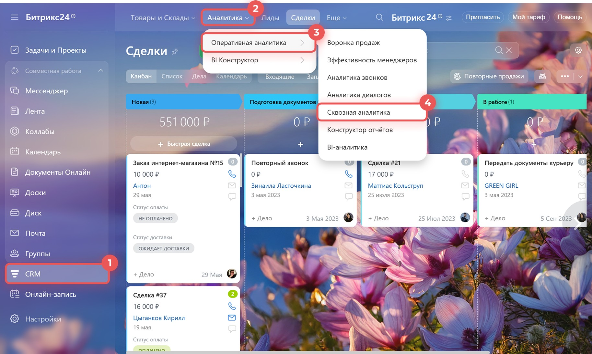
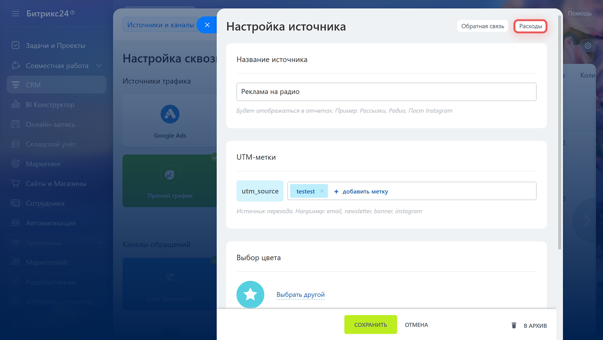
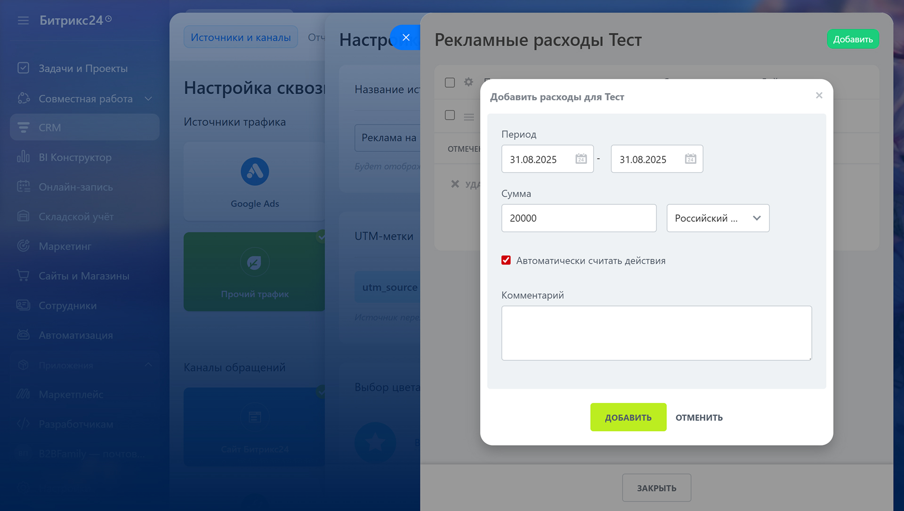
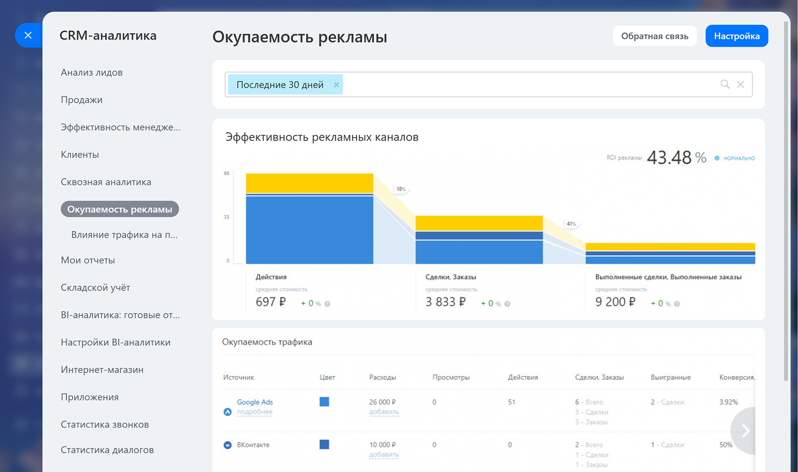
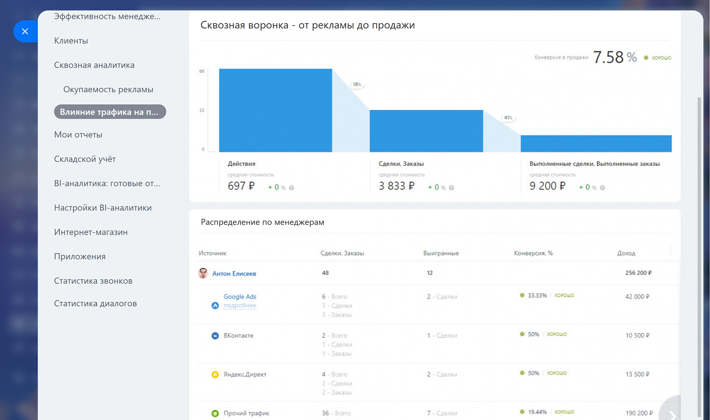

Сквозная аналитика в Битрикс24: что это, кому нужна и когда её мало
«Какая реклама реально приносит продажи?» — вопрос, на который большинство компаний отвечают на глазок: «вроде из Инстаграма звонят чаще». Сквозная аналитика превращает это «вроде» в цифры: сколько потрачено на каждый канал и сколько денег он принёс. Разбираем, как это работает в Битрикс24, всем ли бизнесам это нужно и когда штатного инструмента становится мало.
Что такое сквозная аналитика
Раздел живёт в CRM → Аналитика → Оперативная аналитика → Сквозная аналитика. По сути это место, где сведены все каналы привлечения клиентов и вклад каждого из них в продажи.
Обычная CRM-аналитика показывает, что происходит внутри воронки: сколько лидов, на каком этапе застряли сделки, кто из менеджеров эффективнее. Но она не отвечает на вопрос «откуда взялся этот лид и во сколько он обошёлся». Сквозная аналитика добавляет именно этот слой: учитывает расходы на каждый источник — контекстную рекламу, соцсети, наружку, выставки — и сопоставляет их с реальными продажами из этого источника.
В результате видно не «сколько лидов пришло из ВКонтакте», а сколько стоил один клиент из ВКонтакте и сколько денег этот канал в итоге принёс. Это и есть основа для решения «куда вложить рекламный бюджет в следующем месяце».

Всем ли нужна сквозная аналитика
Инструмент мощный, но не обязательный для всех. Прежде чем настраивать, стоит честно ответить — а есть ли задача, которую он решает.
 Рекламный бюджет распределён на несколько каналов одновременно — контекст, таргет, маркетплейсы, офлайн
Рекламный бюджет распределён на несколько каналов одновременно — контекст, таргет, маркетплейсы, офлайн- Руководитель или маркетолог регулярно решает, куда перераспределить бюджет на следующий период
- Есть звонки как канал обращения, и важно понимать, какая реклама их приносит
- Цикл сделки не мгновенный — важно довести источник до итоговой оплаты, а не только до заявки
- Реклама не запущена вообще или идёт из одного-единственного источника
- Продажи идут в основном по рекомендациям, тендерам или через личные контакты менеджеров
- В CRM пока не наведён порядок — сначала стоит настроить саму работу со сделками
- Тариф Битрикс24 не поддерживает функцию — тогда обычной оперативной аналитики достаточно на первое время
Из чего складывается настройка
Чтобы отчёты считались верно, нужны настройки с двух сторон: в самом Битрикс24 и в источниках трафика — рекламных кабинетах, сайте, соцсетях.
1. Источники трафика
Заводим каждый канал отдельным источником: название, цвет для графиков и UTM-метка, по которой Битрикс24 узнаёт трафик — utm_source, utm_medium, utm_campaign.
2. Коллтрекинг и подмена номеров
Если считаем звонки, для сайта подключается подмена номера: каждому источнику трафика — свой номер, а Битрикс24 сам определяет, из какой рекламы позвонил клиент. Работает не с любым оператором — номер нужно предварительно проверить.
3. Расходы на рекламу
Для рекламных кабинетов с интеграцией (Google Ads, Яндекс.Директ) суммы подтягиваются автоматически. Для остального — радио, выставки, наружка — расход вносится вручную: период, сумма, валюта.
4. Отчёты
Отчёт появляется только тогда, когда хотя бы один источник размечен UTM-меткой — весь неразмеченный трафик уходит в «Прочий трафик» и не участвует в сравнении каналов.


Что показывают отчёты
Отчёт «Окупаемость рекламы» — самый наглядный: сверху воронка с разбивкой по каналам и общий ROI, ниже — таблица с расходами и конверсией по каждому источнику.
На примере из справки Битрикс24: за Google Ads заплатили 26 000 ₽, реклама принесла 51 действие и 6 сделок/заказов, из них 2 выиграно — конверсия 3,92%. У ВКонтакте бюджет 10 000 ₽, но из двух обращений до сделки дошло одно — конверсия 50%. Общий ROI рекламы за период — 43,48%. Именно такое сравнение и есть смысл сквозной аналитики: не «какой канал даёт больше лидов», а «какой канал реально окупается».

Второй отчёт, «Влияние трафика на продажи», раскладывает те же данные по сотрудникам: видно, кто из менеджеров лучше конвертирует клиентов из конкретного канала, а не только общую эффективность рекламы.

Плюсы и минусы штатного инструмента
- Уже встроена в CRM — не нужна отдельная система и интеграция с ней
- Работает на тех же данных о сделках, что и остальная отчётность — без риска расхождений между системами
- Готовые отчёты по окупаемости рекламы и вкладу менеджеров без разработки
- Автоподтягивание расходов из Google Ads и Яндекс.Директ при подключённом кабинете
- Входит в тариф Битрикс24 — не требует отдельной ежемесячной подписки
- Доступна не на всех тарифах Битрикс24 — нужно уточнять по своему тарифному плану
- Есть лимит на число лидов, сделок, контактов и компаний: 1 000 на Бесплатном, 100 000 на Базовом/Стандартном/Профессиональном, 200 000+ на Энтерпрайзе
- Одна модель атрибуции — тонко настраивать «вклад первого и последнего касания» отдельно нельзя
- Коллтрекинг работает не с любыми номерами и операторами — нужна предварительная проверка
- Без UTM-меток источник не определяется и попадает в «Прочий трафик» — отчёт всегда настолько точен, насколько размечена реклама
Когда нужен отдельный сервис сквозной аналитики
Штатного инструмента хватает большинству небольших и средних компаний. Но у специализированных сервисов — Roistat, Calltouch, Callibri и похожих — есть возможности, которых в CRM нет в принципе.
Отдельный сервис имеет смысл, если нужно: гибко настраивать модели атрибуции (не только последнее касание, а вклад каждого шага в цепочке); сводить данные из нескольких CRM или систем продаж в одном месте; подключать динамический коллтрекинг с подменой номера для каждого посетителя сайта в реальном времени; или строить сквозную аналитику для бизнеса, где часть продаж вообще идёт мимо Битрикс24 — например, через отдельный колл-центр или розничные точки.
| Критерий | Сквозная аналитика Битрикс24 | Отдельный сервис (Roistat, Calltouch и похожие) |
|---|---|---|
| Стоимость | Входит в тариф Битрикс24 | Отдельная ежемесячная подписка |
| Лимит элементов CRM | Есть, зависит от тарифа | Обычно без таких ограничений |
| Модели атрибуции | Одна встроенная модель | Несколько моделей на выбор |
| Динамический коллтрекинг | Базовый, с ограничениями по номерам | Подмена номера под каждого посетителя |
| Несколько CRM или источников продаж | Только данные самого портала | Сводит данные из разных систем |
| Настройка и внедрение | Настраивается внутри портала | Нужна отдельная интеграция и обучение |
| Лучший сценарий | Один портал, разумный рекламный бюджет | Большие бюджеты, сложная многоканальная воронка |
Одна из трёх опор аналитики в Битрикс24
Сквозная аналитика — не отдельный инструмент сам по себе, а часть общей системы отчётности Битрикс24. Про то, какие ещё уровни отчётности есть в CRM — от готовых отчётов до конструктора и BI — мы писали в статье «Отчётность в Битрикс24: какая бывает и когда она не работает». А если возникает задача свести сквозную аналитику с данными 1С, склада или нескольких рекламных кабинетов в одном управленческом дашборде — это уже уровень BI-аналитики, который мы разбирали отдельно в статье «BI-аналитика для Битрикс24».
«Сквозная аналитика не работает в отрыве от порядка в CRM: если сделки заводятся не всегда, а реклама размечена наполовину, отчёт покажет красивую воронку с дырами. Поэтому мы всегда начинаем с аудита источников и меток — и только потом строим отчёты, на которые можно опираться при распределении бюджета». Команда «АйТи Аналитикс»
Что входит в настройку сквозной аналитики
Аудит рекламы и меток
Смотрим, какие каналы уже используются, где расставлены UTM-метки, а где реклама идёт «в прочий трафик» и теряется для аналитики.
Подключение источников
Заводим все каналы — контекст, таргет, соцсети, офлайн — отдельными источниками с UTM-метками и, где нужно, интеграцией с рекламными кабинетами.
Коллтрекинг и подмена номеров
Проверяем номера на поддержку подмены, настраиваем распределение звонков по источникам, чтобы обращения по телефону тоже попадали в отчёт.
Учёт расходов
Настраиваем автоматическое подтягивание бюджетов из рекламных кабинетов и регламент ручного внесения расходов там, где интеграции нет.
Отчёты и обучение
Показываем руководителю и маркетологу, как читать «Окупаемость рекламы» и «Влияние трафика на продажи» и принимать решения по бюджету на их основе.
Решение про отдельный сервис
Если задач больше, чем умеет штатный инструмент — предлагаем и подключаем внешний сервис сквозной аналитики или переход на уровень BI.
Настроим сквозную аналитику под ваши каналы
Проверим источники и метки, подключим коллтрекинг и расходы, соберём отчёты — чтобы бюджет на рекламу распределялся по цифрам, а не на глаз.